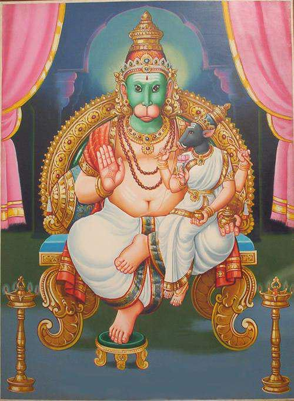

अथर्ववेद हा चार प्रमुख वेदांपैकी एक आहे.
हा ग्रंथ चार वेदांपैकी सगळ्यात शेवटी म्हणजे इ.स.पूर्व ६००० या काळात लिहिला गेल्याचे मानले जाते.
आयुर्वेद हा अथर्ववेदाचा उपवेद आहे.आयुर्वेद हा विष्णू अवतार धन्वंतरी यांनी आयुर्वेदाची रचना केली.
अथर्ववेदात तत्त्वज्ञानाबरोबर जीवनातील अडचणी, औषधी वनस्पती आणि संकटावरील उपायांचीही माहिती
आहे.
समाजातील सर्व थरांमध्ये, तसेच भारतातील सर्व धर्मांमध्ये अथर्ववेदीय उपासनांचा प्रचार आजही
दिसतो.
हा वेद ऋषी अथर्व यांनी लिहीला आहे. हा वेद सोडून सर्व वेद ब्रह्मदेवाने त्यांच्या मुखातून सांगून
लिहीले आहे.
याला शंकरदेवाने चौथ्या वेदाच्या रूपात मान्यता दिली.
भारतीय संस्कृती-इतिहासात चतुर्थ वेद म्हणून मान्यता पावलेला,परंतु परंपरागत ब्राह्मण वर्गाने वेद
त्रयीमध्ये समावेश करण्यास नाकारलेला अथर्ववेद, यज्ञीय धर्मसाधनेच्या दृष्टीने ऋग्वेदाहून कमी
महत्त्वाचा असला, तरी भारतीय लोकसाहित्याचा आद्य स्रोत या दृष्टीने सामाजिक आणि सांस्कृतिक दृष्ट्या
तो ऋग्वेदाहूनही अधिक महत्त्वाचा आहे.
सर्वंकष समाजाभिमुखता हे अथर्व वेदाचे प्रमुख वैशिष्ट्य असून, समाजातील निष्कांचन ग्रामीण जनतेपासून
उच्चपदस्थ राजा-महाराजांपर्यंतच्या समस्त वर्गांचा परामर्श या ग्रंथात आढळतो.